EXP-001 · Expediente cerrado
Pulled pork — ensayo inicial
Espaldilla de cerdo marinada en cerveza Vienna oscura, con rub especiado, carbón de mezquite y humo de manzano. Primer experimento completo de Smoke Lab.
Completado- Fecha
- 19 julio 2026
- Cocción
- 8 h 45 min
- Peso inicial
- 4.00 kg
- Temperatura final
- 93 °C
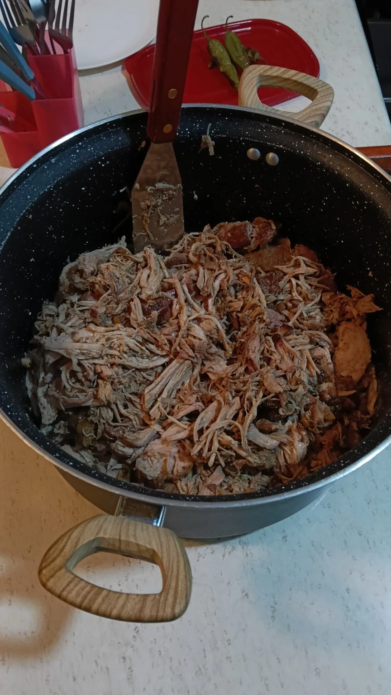
Resumen ejecutivo
Se cocinó una espaldilla de cerdo sin hueso de 4.00 kg mediante calor indirecto. La fase principal se mantuvo alrededor de 125 °C y la fase final, después de envolver, se aceleró para cumplir un servicio previsto a las 15:00 h. La pieza se retiró a las 13:15 h con 93 °C internos y resistencia mínima a la sonda.
El resultado fue una carne muy tierna, jugosa y uniforme, con humo suave pero persistente, bark de sabor intenso y equilibrio entre salado, dulzor y especias. Se deshebró a las 15:10 h y no requirió líquido adicional.
Objetivo e hipótesis
Objetivo
Obtener pulled pork jugoso y fácil de deshebrar, con bark firme, aroma agradable y humo equilibrado, documentando todo el proceso.
Hipótesis de trabajo
Una cocción indirecta estable, acompañada de humo moderado, envoltura después de fijar el bark y reposo suficiente produciría fibras suaves y húmedas sin ocultar el sabor natural de una carne de buena calidad.
Resultado: la hipótesis fue compatible con las observaciones. La textura, el aroma y el sabor alcanzaron las puntuaciones máximas otorgadas por el autor.
Material cárnico y preparación
- Corte
- Espaldilla de cerdo sin hueso
- Peso inicial
- 4.00 kg
- Calidad percibida
- Excelente
- Inicio del marinado
- 18 julio · 16:00 h
- Duración
- Aproximadamente 12 h, refrigerada
- Marinada
- Cerveza Vienna oscura y pimienta
- Binder
- Mostaza
- Rub
- Ajo, cebolla, paprika, sal, cayena y poco azúcar mascabado
- Marinado refrigerado durante aproximadamente 12 horas.
- Retiro del refrigerador alrededor de 30 minutos antes de cocinar.
- Secado superficial de la pieza.
- Aplicación de mostaza como binder.
- Aplicación generosa de rub, sin cuantificar sus componentes.
Sistema experimental
- Equipo
- Asador rectangular con tapa
- Método
- Cocción indirecta
- Combustible principal
- Carbón de mezquite
- Madera aromática
- Trozos de manzano
- Apoyo térmico
- Briquetas de buena calidad, añadidas en pequeñas cantidades
- Ventilación inicial
- Entrada inferior 20 % · salida superior 20 %
- Bandeja inferior
- Líquido del marinado y vino blanco
- Medición
- Termómetro de tapa y termómetro analógico para la carne
Las briquetas se usaron para sostener el calor; el manzano fue la fuente aromática. Después de envolver la pieza no se añadió más madera.
Condiciones ambientales y control térmico
El encendido comenzó alrededor de las 04:00 h bajo clima frío. Durante el amanecer se percibió un descenso adicional de la temperatura ambiental que redujo la temperatura de cámara y exigió compensación con combustible. Más tarde, la exposición solar calentó la estructura metálica y obligó a regular de nuevo el flujo de aire. Finalmente ocurrió una lluvia breve que cesó durante la misma jornada.
La experiencia previa del operador con parrillas permitió esperar la respuesta retardada del asador, evitar aperturas innecesarias y no sobrerregular el fuego.
Línea de tiempo completa
| Hora | Tiempo | Cámara | Interna | Intervención y observación |
|---|---|---|---|---|
| 04:00 | Preparación | — | — | Encendido del asador bajo ambiente frío. |
| 04:30 | 0:00 | 120–130 °C | ND | Entrada de la pieza; cocción indirecta. |
| 05:00 | 0:30 | 125 °C | ND | Humo blanco ligero, aroma agradable; ventilas 20/20; sin intervención. |
| 05:30 | 1:00 | 125 °C | ND | Humo blanco suave y olor excelente; sistema estable. |
| 06:00 | 1:30 | 132 °C | ND | Adición de dos briquetas para sostener calor. |
| 06:30 | 2:00 | 135 °C | ND | Adición de un trozo de manzano; comienza aroma de grasa; sin abrir la cámara. |
| 07:00 | 2:30 | 125 °C | ND | Humo suave; aroma agradable; sin intervención. |
| 07:30 | 3:00 | 130 °C | ND | Humo suave; sin intervención. |
| 08:00 | 3:30 | 125 °C | ND | Dos briquetas; goteo visible hacia la bandeja; humo muy tenue y color cobrizo observado por la ventila. |
| 08:30 | 4:00 | 125 °C | ND | Sin intervención registrada. |
| 09:00 | 4:30 | 125 °C | ND | Supervisión compartida para permitir descanso del operador. |
| 09:30 | 5:00 | 125 °C | ND | Temperatura estable. |
| 10:30 | 6:00 | 125 °C | 75 °C | Bark seco, firme y bien desarrollado; envoltura hermética en aluminio. |
| 11:45 | 7:15 | 150 °C | 83 °C | Pieza envuelta; fase final acelerada. |
| 12:30 | 8:00 | 160 °C | 90 °C | Sin humo; aroma excelente; paquete totalmente sellado. |
| 13:15 | 8:45 | — | 93 °C | La sonda entra fácilmente; retiro inmediato del asador. |
| 14:00 | Reposo 0:45 | — | ≈90 °C | Apertura parcial y reducción de calor; bark caoba oscuro e intacto. |
| 14:00–15:10 | Mantenimiento | Olla ≈70 °C | — | Conservación caliente en olla con tapa. |
| 15:10 | Reposo total 1:55 | — | — | Apertura definitiva, deshebrado, mezcla con sus jugos y servicio. |
ND: no determinado. No se registró temperatura interna antes de adquirir y colocar el termómetro durante el ensayo.
Puntos de decisión
| Decisión | Criterio observado | Hora | Resultado |
|---|---|---|---|
| No abrir durante la fase inicial | Estabilidad de cámara y observación por ventilas | 04:30–10:30 | Menor pérdida de calor y desarrollo continuo del bark. |
| Envolver | Bark seco, firme y temperatura interna de 75 °C | 10:30 | Se protegió la humedad y se hizo predecible el horario. |
| Aumentar cámara | Servicio previsto a las 15:00 h | Después de 10:30 | Avance de 75 a 93 °C sin agregar más humo. |
| Retirar | 93 °C y sonda con resistencia mínima | 13:15 | La textura final fue 10/10. |
| Reposar y mantener caliente | Servicio posterior al final de cocción | 13:15–15:10 | Carne húmeda, estable y fácil de deshebrar. |
Jugo ahumado de cocción
El líquido de la bandeja —que contenía restos del marinado crudo, vino blanco, grasa y goteos— se recuperó por separado. Se añadió agua, se llevó a hervor durante 10 minutos, se redujo moderadamente, se enfrió, se retiró una fracción solidificada, se coló y se refrigeró.
El sabor resultó intenso y agradable, con notas de carne y humo. Sin embargo, la carne final conservó suficiente humedad y no fue necesario añadirlo. Quedó como aderezo opcional.
Registro fotográfico
Secuencia del tratamiento previo, control del asador, bark, reposo, deshebrado y servicio. Las imágenes conservan el orden general del proceso.
{kind=link}
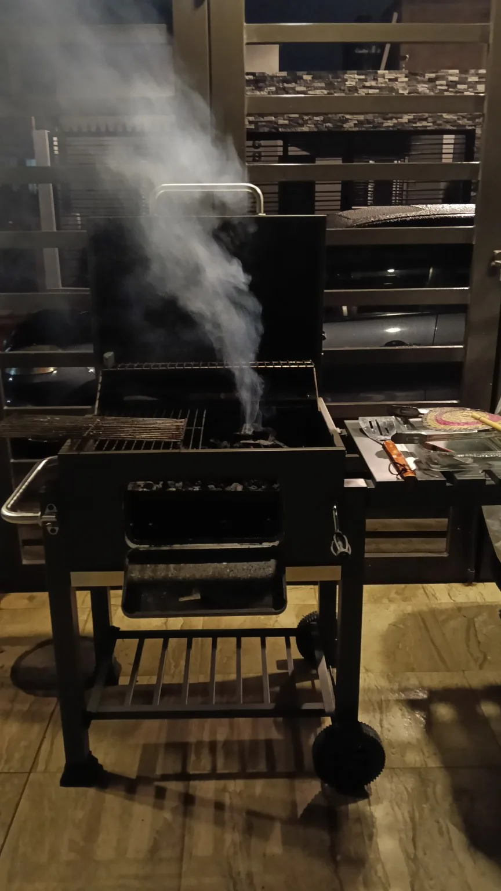
{kind=link}
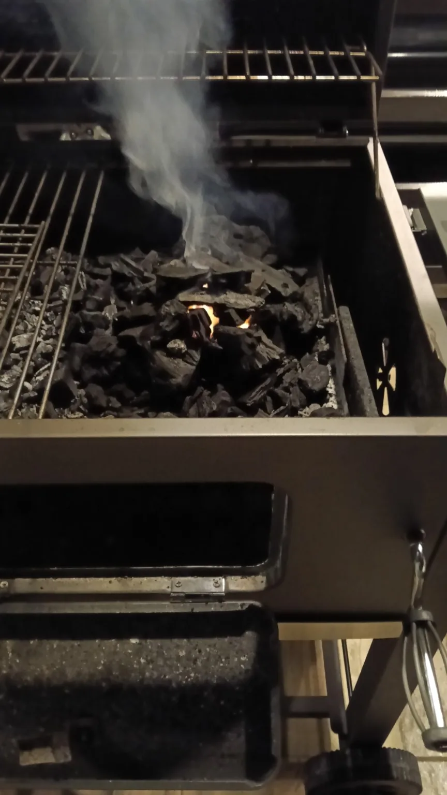
{kind=link}
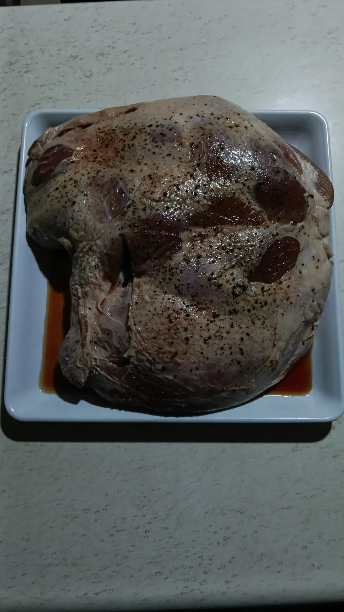
{kind=link}
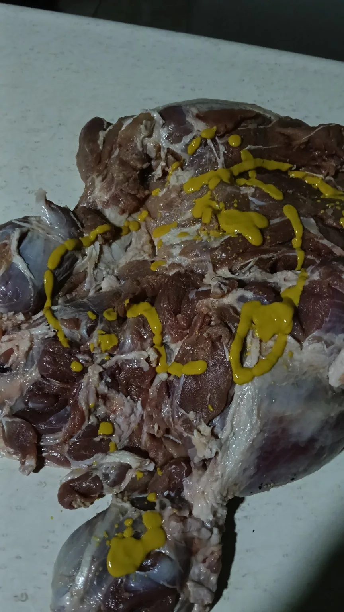
{kind=link}
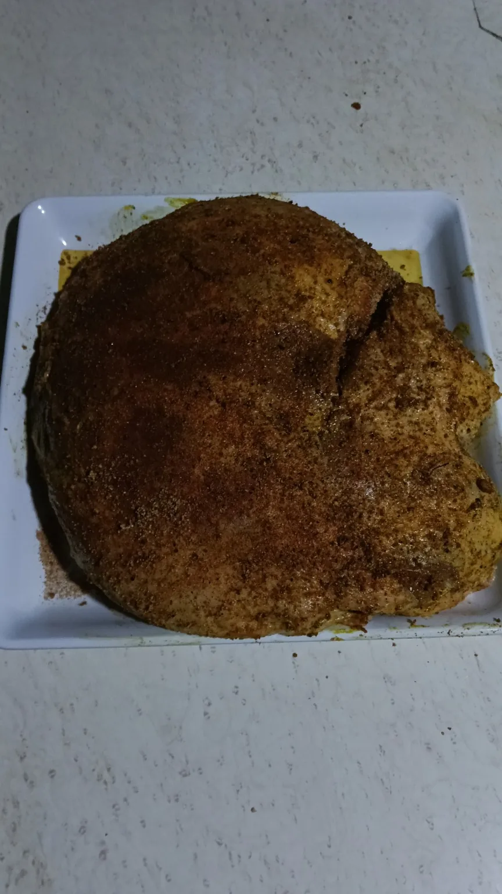
{kind=link}
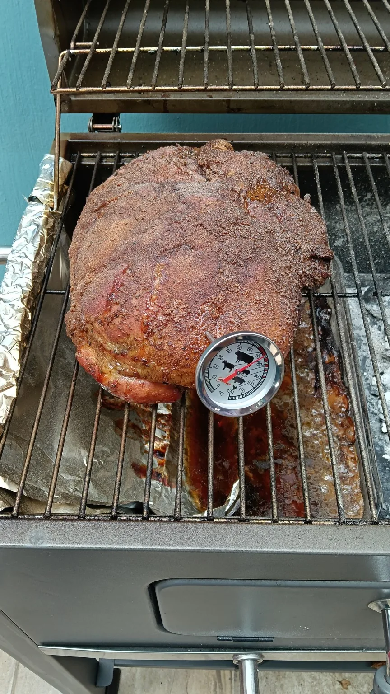
{kind=link}
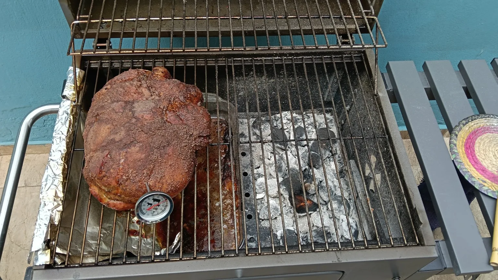
{kind=link}
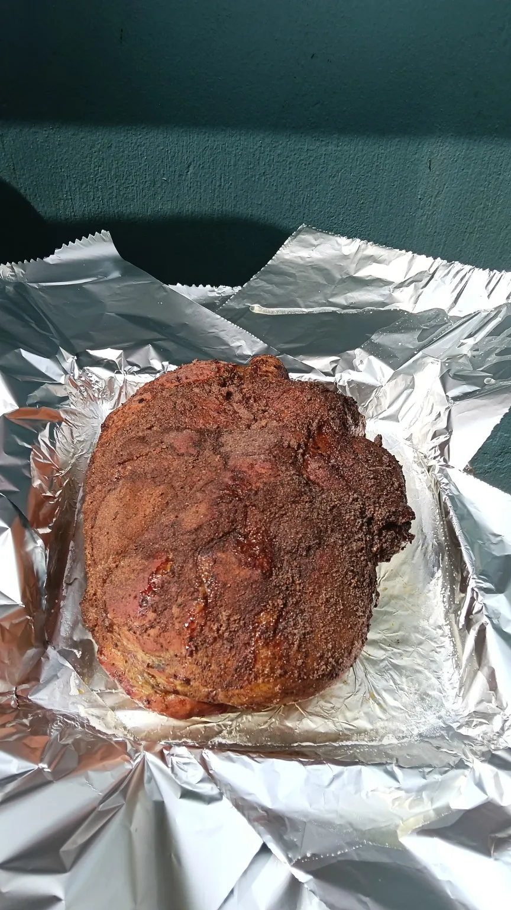
{kind=link}
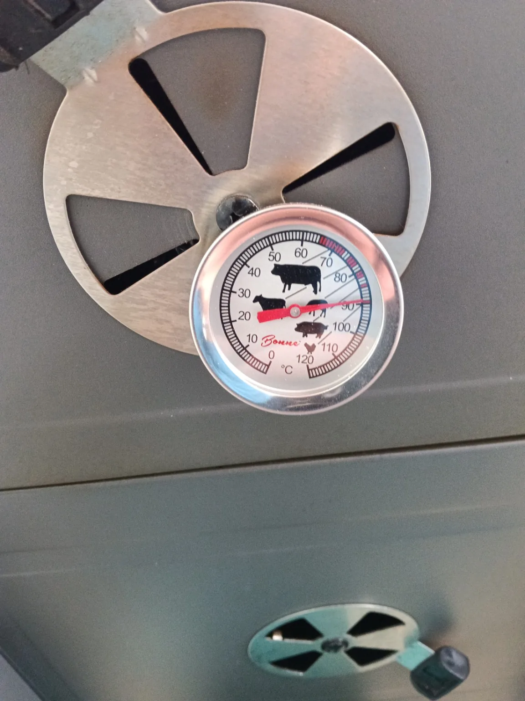
{kind=link}
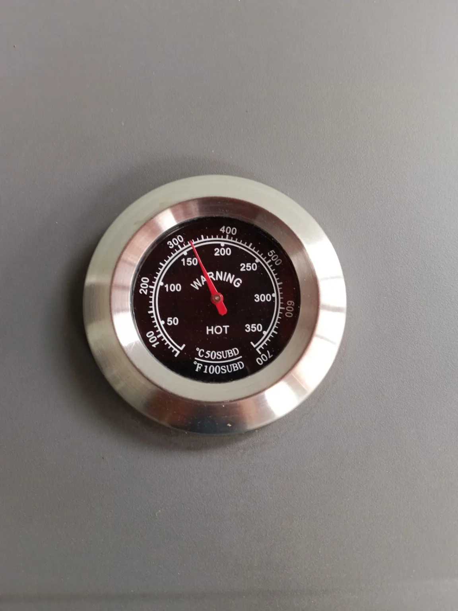
{kind=link}
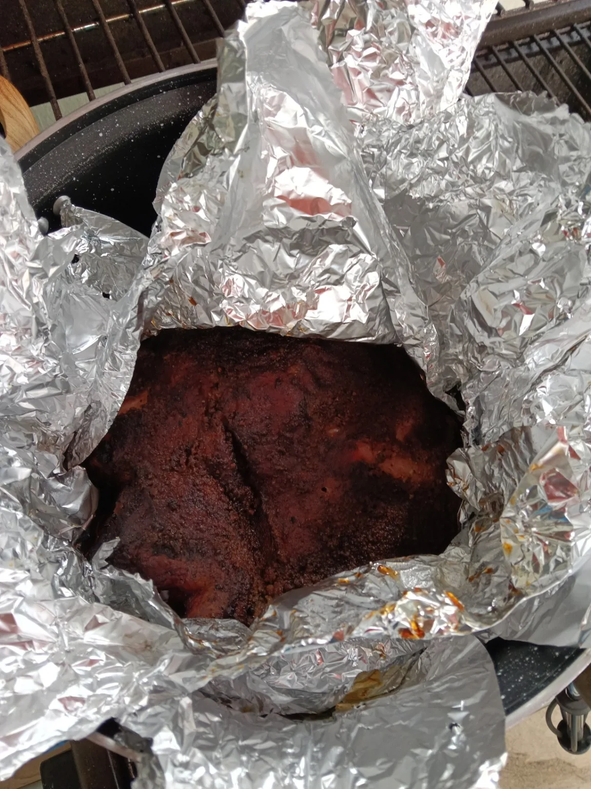
{kind=link}
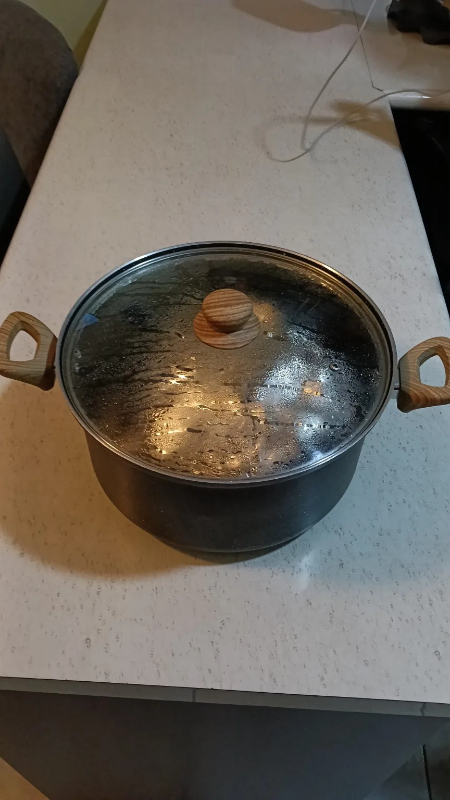
{kind=link}
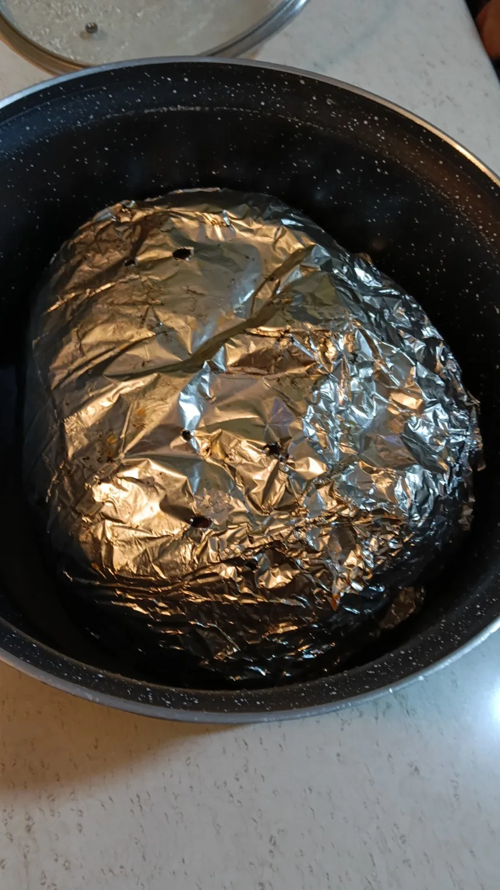
{kind=link}
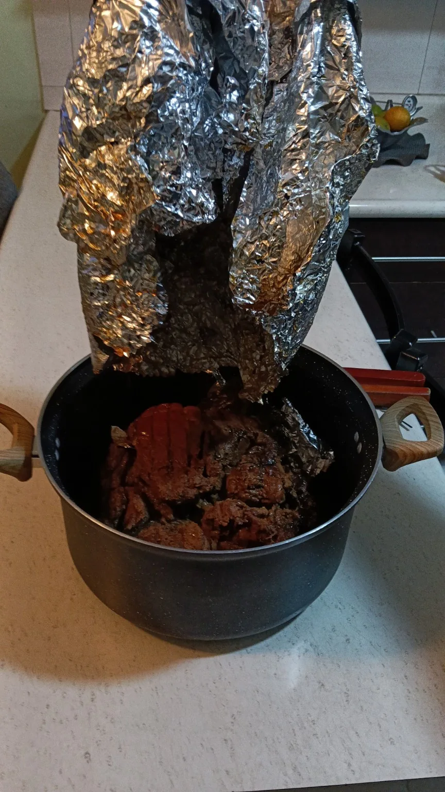
{kind=link}
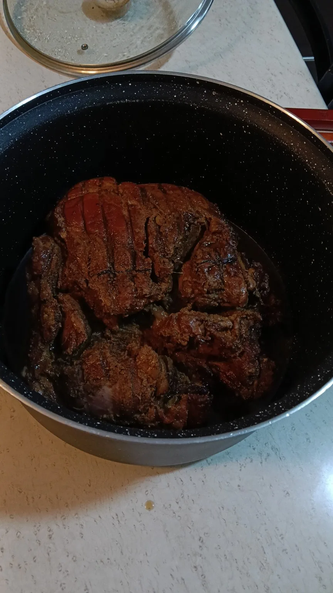
{kind=link}
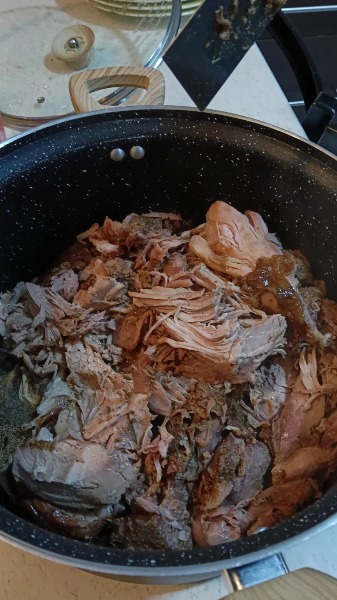
{kind=link}
{kind=link}
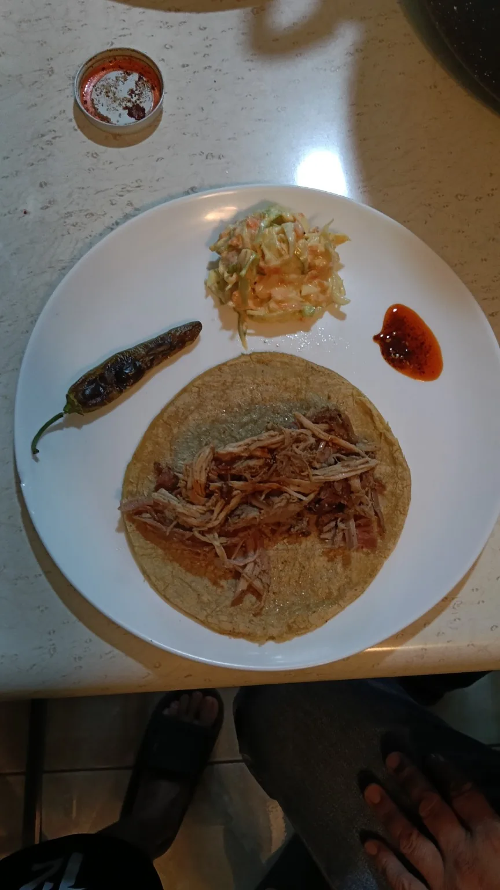
Resultados y rendimiento
- Duración de cocción
- 8 h 45 min
- Reposo y mantenimiento
- 1 h 55 min
- Temperatura de retiro
- 93 °C
- Facilidad de deshebrado
- Se separaba prácticamente sola
- Fibras
- Muy largas, suaves y definidas
- Uniformidad
- Sin zonas firmes, secas o resistentes
- Peso cocido
- No determinado
- Rendimiento práctico
- 6 personas servidas + ≈8 porciones restantes
La cantidad de 4 kg se consideró adecuada para el tamaño del equipo y la escala doméstica del ensayo. El rendimiento gravimétrico no puede calcularse porque la carne no se pesó después de la cocción.
Evaluación sensorial
| Atributo | Observación final |
|---|---|
| Deshebrado | La pieza se desbarataba sola; se utilizó un tenedor para distribuir el bark. |
| Humedad | Muy jugosa al abrir; equilibrada al mezclar, sin quedar seca ni caldosa. |
| Sensación en boca | Jugosa, ligeramente pegajosa y muy agradable. |
| Aroma | Carne y humo con matiz dulzón equilibrado por el componente salado. |
| Humo | Suave, limpio, siempre presente y persistente; no dominante ni empalagoso. |
| Sal | Baja pero excelente; permitió distinguir todos los sabores. |
| Condimentos | Ninguno predominó; no se percibió picor ni amargor. |
| Bark | Uniforme y adherido; no crujiente tras el reposo, pero con textura y sabor excelentes. |
| Defectos | No se detectaron sabores amargos, olores acres ni zonas secas. |
La jugosidad recibió 9/10 únicamente porque la carne no escurría; esta fue una percepción subjetiva y no un indicio de sequedad. Los jugos permanecieron retenidos y distribuidos en las fibras.
“Huele que enamora.”
Servicio y aceptación
- Tortilla
- Maíz amarillo, hecha a mano y calentada en comal
- Ensalada
- Ensalada de col, servida como acompañamiento y probada dentro del taco
- Salsa
- Salsa macha con ajonjolí, papa en aceite y chile seco
- Picor
- Medio
- Chile
- Toreado en el asador y consumido fuera del taco
- Maridaje observado
- Tequila blanco
La combinación de carne, tortilla, ensalada y salsa produjo un balance correcto, sin que algún componente dominara. La esposa y los hijos del autor mostraron una aceptación excelente y comieron con gusto.
“Todavía siento en el paladar ese sabor rico de humo.”
Contexto de la jornada
Desde las 12:00 h, con la pieza ya envuelta y el proceso térmico bajo control, la jornada continuó con cerveza y la final de la FIFA. Este detalle no se considera una variable del tratamiento cárnico, pero forma parte de la bitácora humana del experimento.
La esposa del autor colaboró supervisando el asador durante parte de la mañana y preparando la ensalada de col.
Interpretación y conclusiones
Qué funcionó
- Uso de una pieza de buena calidad y tamaño apropiado para el equipo.
- Fase inicial prolongada alrededor de 125 °C, con aperturas mínimas.
- Adiciones pequeñas de combustible en lugar de correcciones bruscas.
- Humo de manzano moderado y suspensión de madera después de envolver.
- Envoltura cuando el bark ya estaba seco y firme.
- Retiro basado en temperatura y resistencia de la sonda, no solo en el reloj.
- Reposo prolongado y mantenimiento caliente antes del deshebrado.
- Mezcla final con los propios jugos y distribución del bark.
Limitaciones
- Rub no cuantificado.
- Ausencia de temperatura interna desde el inicio.
- Temperatura de cámara medida en la tapa, no junto a la carne.
- Clima observado cualitativamente, sin temperatura ambiental, viento o precipitación medidos.
- Sin peso cocido ni peso final deshebrado.
- Evaluación sensorial doméstica, sin panel ciego ni réplicas.
Próxima repetición
Culinariamente se repetiría el mismo procedimiento. Para aumentar la calidad experimental deben añadirse una sonda permanente, pesaje del rub, peso final, registro ambiental y medición del consumo de combustible.
Notas de inocuidad y fuentes
La temperatura mínima segura para asados enteros de cerdo es 63 °C, seguida de al menos 3 minutos de reposo. El retiro a 93 °C fue un criterio culinario de textura, no una exigencia adicional de inocuidad. Para mantenimiento caliente se utilizó un objetivo superior a 60 °C.